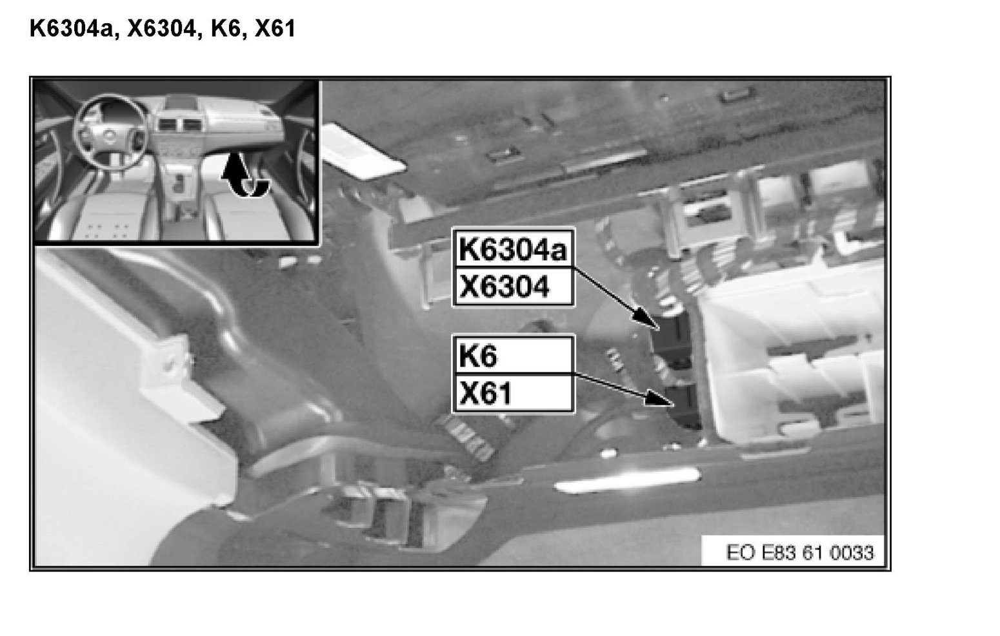

Operation CHARM
: Car repair manuals for everyone.
Home
>>
BMW
>>
2007
>>
X3 3.0si (E83) L6-3.0L (N52K)
>>
Repair and Diagnosis
>>
Powertrain Management
>>
Emission Control Systems
>>
Air Injection
>>
Air Injection Pump Relay
>>
Locations
Air Injection Pump Relay: Locations
